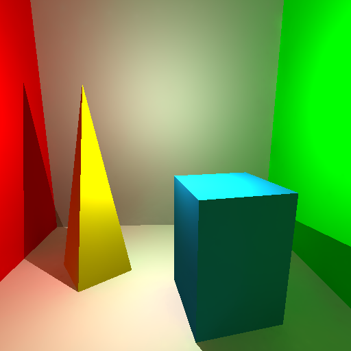
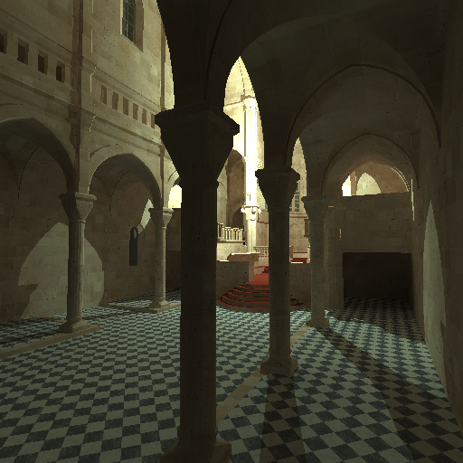
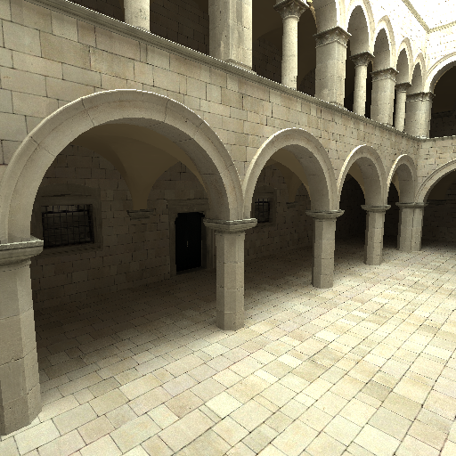
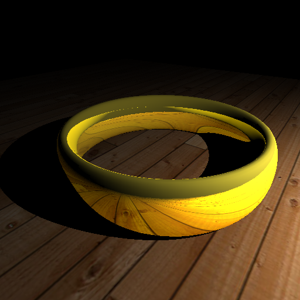

| Copyright © Mathias Neumann 2010 | www.maneumann.com |
This file provides a short introduction to the given application called MNRT. It is organized as follows:
The application implements several techniques to realize fast global illumination for dynamic scenes on Graphics Processing Units (GPUs). It was developed during the creation of my Diplomarbeit (German master thesis equivalent):
GPU-basierte globale Beleuchtung mit CUDA in Echtzeit
Neumann, Mathias
Diplomarbeit, FernUniversität in Hagen, 2010
The basic ideas of the implementation are described within [Wang et al. 2009]. Right now MNRT is very experimental. Therefore it might contain several errors. Furthermore MNRT does not show all features of the system described in my thesis. For example, spherical harmonics are not used to handle glossy materials, yet. They might be added in the future. The following figure shows some images rendered with the current version of MNRT.
|  |  |  |
| (a) MNSimple | (b) Sibenik | (c) Sponza |
As the title of my thesis suggests, I used the CUDA API to develop a GPU-based application. That's why the execution of MNRT requires a CUDA capable NVIDIA GPU with compute capability of at least 1.1. All these GPUs are listed here. Furthermore I currently only provide a Windows version of MNRT, although I used platform independent libraries only. So a version for other operating systems might follow. Hence the requirements are:
Computing global illumination is a quite complex task. Therefore a powerful, up-to-date GPU should perform somewhat better than older GPUs. Right now I use a NVIDIA GTX 460, however MNRT was developed mainly using an older GTS 250.
In case MNRT crashes without message, please enable the error check mode, see the menu entry "Help -> Enable Error Checks". It puts a synchronization operation just behind each kernel call and tries to catch possible CUDA errors as soon as possible. It is disabled by default as the synchronization takes quite some time.
Warning: As MNRT is certainly not free of errors, especially the experimentation with different scenes might result into problems. For example, large scenes might ask for too much GPU memory. Some other problems might be endless GPU loops or illegal GPU memory operations. They can lead to non-responding display drivers, so the system might block for some time until the operating system recovered from such a lock. In some cases they also might result in a blue screen, e.g. when the display driver could not be recovered.
Global illumination tries to simulate the propagation of light using a more physically oriented computation than common local illumination models. The latter just ignore or coarsely approximate the effects of indirect illumination. Indirect illumination however greatly increases the realism of generated images. It is the result of light scattering at obstacles, e.g. surfaces of objects. Such scattering can also result of participating media like fog. MNRT simplifies the scattering process by taking only scattering at surfaces of objects into account. An overview of MNRT's components is given in the subsequent image.
Light scattering can be handled efficiently using photon mapping. Here we send out photons from the direct light sources and trace them through the given scene. For each photon-surface-intersection we record the position, incoming direction and power (flux) of the photon. All photons are stored in a so called photon map. After that we can use the photons to estimate the indirect illumination using a density estimation.
Direct lighting is handled using ray tracing techniques, i.e. by sending out rays from the camera and tracing them through the scene. At intersection points the incoming radiance from direct light sources is computed. Furthermore we send out rays for specular reflections/transmissions. These so called secondary rays are traced in the same way.
At all intersection points (we call them "shading points") we have to compute the indirect illumination. This can be done using the photons of the photon maps to estimate the incoming radiance from indirect light sources (density estimation). To improve the quality of that process, one normally applies final gathering. Here we send out gather rays from each sample point into random directions in the hemisphere over the sample point (defined by the surface normal). For each gather ray we estimate the incoming radiance due to indirect illumination from the ray's direction. This is done by density estimation using the photon map. Therefore the process of density estimation is dislocated and its errors are hidden.
The radiance from each gather ray is used to estimate the incoming indirect illumination using Monte Carlo integration. This leads to the problem of variance in the result, which creates a noisy image when using not enough random samples (i.e. gather rays). Here lies the complexity of the final gathering algorithm: We have to send out several hundred gather rays to obtain noisefree images, for complex scenes even thousands of rays.
Ray tracing is quite efficient on modern hardware, e.g. on multi-core CPUs or GPUs. Several researchers reported real-time framerates for complex scenes. Incorporating dynamic geometry however requires to rebuild the ray-object intersection acceleration data structure for every frame. Therefore a fast construction algorithm is required.
In MNRT a GPU-based kd-tree is used at several places, including the acceleration of ray-object intersection tests. Its GPU-based construction is described by [Zhou et al. 2008]. I implemented this construction algorithm in MNRT. As I could not optimize all sections of MNRT, I cannot reach the timings of Zhou et al.
The actual ray tracing algorithm was implemented on the GPU, too. MNRT shows some performance results of this implementation. However, you'd have to disable photon mapping to get the actual ray tracing performance. Specular reflection and transmission rays are supported, but quite untested and right now limited to just one bounce. I suspended working on specular materials to reduce the number of error sources. The following picture shows an image ray traced with MNRT and specular reflections enabled.
|  |
| MNRing (ray traced) |
Photon maps can benefit from a fast kd-tree implementation, too. Therefore MNRT also uses a kd-tree to store the photons in a scene independent way. Just like [Zhou et al. 2008] I use a recursive DFS-based range search algorithm to restrict the number of considered photons for density estimation. Each CUDA thread performs the search for one given query point. The recursive search algorithm can be easily mapped to a CUDA device function using the local GPU memory to store a stack.
[Wang et al. 2009] proposed two photon maps: The caustics photon map stores all photon interactions that were reflected in a specular way (specular reflection/transmission) before hitting the surface the interaction represents. It can be used to capture caustics, i.e. focussed light, by performing the density estimation directly without final gathering. All other photon interactions are stored in the global photon map. It is not queried in indirect ways, but only by the use of final gathering.
To allow precise density estimation, one have to take the local photon density into account. Especially caustic effects can lead to extreme fluctuation in photon density. A fixed query radius for the range search can blur out sharp caustic patterns. That's why [Jensen 2001] proposed a kNN (k Nearest Neighbors) search to look for the k closest photons only. For this operation, MNRT uses a histogram-based approach to determine the query radius in a iterative way before executing the actual query [Zhou et al. 2008].
Right now, only support for diffuse surfaces is active within MNRT. Caustics photon map generation is implemented, but not tested very well. Therefore I currently cannot provide any examples for caustics effects. You might try to load your own models with specular materials, however they have no effect, yet.
The photon map mode can be configured using the appropriate menu entries. There is one mode to visualize the photons stored in the photon maps by small discs. Another mode performs full final gathering to compute the indirect illumination. This takes quite some time, even when the GPU-based ray tracing and photon mapping methods are used. The next section describes some ways how final gathering can be accelerated to allow interactive framerates.
This section describes the two main final gathering acceleration techniques implemented in MNRT. Both were proposed by [Wang et al. 2009], however, variations of these techniques were used before.
Interpolation can be employed to reduce the total number of sample points where we have to execute the final gathering algorithm. The idea to sparsely sample the indirect illumination goes back to [Ward et al. 1988]. They observed that indirect illumination in a diffuse environment changes in a smooth way. Consequently, they proposed a caching scheme, the irradiance caching. An iterative caching scheme maps poorly to the GPU architecture as the latter is optimized for parallel execution. Hence MNRT employs a sample selection scheme that chooses all interpolation samples within a single pass.
In the first step of that pass, initial samples are selected using an adaptive approach. A screen space quadtree for the shading points is constructed by classifying all shading points according to the pixel they represent. The quadtree can be constructed level by level in parallel. The construction process is controlled by a metric, the so called geometric variation. It tries to capture illumination changes by considering the geometric properties of the scene. Each quadtree node's geometric variation is defined as the sum of the variations of it's shading points to the node's center. Finally, the initial samples are seeded adaptively according to the geometric variation, starting from the root level down to the leafs of the tree. More samples are assigned to regions of high geometric variation.
To improve the selection of samples, a type of k-means-algorithm is applied iteratively. It uses the geometric variation as metric to generate a clustering of the shading points using the current samples as cluster centers. In the first iteration, the current samples are just the initial samples. They are updated each iteration by using the average position/normal within each cluster as a new current sample. This process is iterated until the process converges or a maximum number of iterations has been reached.
Both steps are implemented within MNRT. The number of initial samples can be selected in a scene specific way as it should be smaller for less complex scenes. A k-means iteration limit can also be specified. The k-means-algorithm is accelerated using the GPU-based kd-tree for shading point to cluster classification.
For each final sample point, final gathering is performed to calculate the incident, caustic-free indirect illumination. [Wang et al. 2009] suggested spherical harmonics to store the incident radiance fields. While I also described this in my thesis, the current version of MNRT just records isotropic irradiance information at each sample point. In either case the illumination stored at each sample point is interpolated using sparse data interpolation in a way similar to that of [Ward et al. 1988].
MNRT provides two ways to use the sampled illumination. The first one is no real interpolation. For each shading point it just assigns the irradiance of the closest sample (in terms of geometric variation). It is called best-fit. The second way performs the real interpolation by considering close sample points. A kd-tree of the sample points helps to restrict the search for nearest points.
To improve temporal coherence for sequences of generated images, MNRT tries to retain sample points from the previous image for generation of the next image. It helps improving the performance and avoids possible flickering. This is done by classifying the new shading points to the old samples (or cluster centers). Shading points that can be classified to old samples (with respect to some error bound) do not have to be included in the generation of new samples. Only those shading points that have a large error when added to an old cluster have to be considered for generating new samples.
So old samples are retained in case there is at least one new shading point classified to that sample. For all unclassified shading points, new sample points are generated by using the algorithm outlined in the previous section. However, the resulting sample count is kept approximately constant.
MNRT's current implementation of this scheme is very simple and makes some assumptions to avoid overhead for computing very few new samples or for computing new samples for very few shading points.
Despite the adaptive sampling described in the previous section, final gathering remains too inefficient for interactive applications. Therefore another acceleration technique is employed. It addresses the complexity of density estimation, which has to be performed at gather ray intersections. This process can be quite costly for large photon maps with hundreds of thousands of photons. Therefore [Wang et al. 2009] proposed the use of a reduced data set for density estimation, the so called illumination cuts. A cut is a set of nodes so that on each path from a leaf to the root there is exactly one node of the path in the set.
An illumination cut can be constructed during the photon map kd-tree construction. The process is governed by an illumination estimate that evaluates the irradiance at the centers of tree nodes. An initial cut is selected using a heuristic that considers the average of the estimated irradiance at a given tree level. This cut is refined by computing a somewhat exact irradiance value at all current cut nodes. A comparison to the estimated irradiance decides whether the node should be replaced by it's children or not. In the former case, the accuracy of the cut is increased. This process is repeated for some iterations. MNRT provides a way to set the iteration count.
For each final cut node, the exact irradiance value is stored. These values are used for density estimation. Instead of considering all photons in the search range, only the closest cut nodes are considered. A spatial data interpolation is employed to interpolate these irradiance values. Range searching can be performed using the allready constructed photon map kd-tree. Here we just have to traverse until we hit a cut node.
Not all these steps are implemented and tested in a satisfying way, yet. For example, the illumination cut selection is still somewhat experimental. I've not yet found a way to somewhat reliably determine the normal at a given node center. The problem gets worse for nodes in the upper levels of the tree, as the center of such a node often doesn't represent a given surface anymore. Also the criteria for cut selection, e.g. the error allowed between estimated and exact irradiance or the level of the tree where to look for the average irradiance, need improvement. Therefore MNRT provides a way to just use all leaf nodes as cut nodes, which is a somewhat trivial and suboptimal choice. Nevertheless it currently leads to comparable performance and better quality.
The use of illumination cuts is independent of the current photon mapping mode. However, they only affect final gathering density estimations. For visualization of photon maps and for direct density estimation of the caustics photon maps they are not employed.
Due to the experimental nature of MNRT, the actual UI is subject to change. Instead of describing every small menu entry or button, this section focusses on the property dialogs of MNRT. Just some other UI elements are explained in the first subsection.
MNRT has two property dialogs. One can be reached over the menu entry "Settings -> Properties". It is always accessible, even if no scene was loaded. The other contains scene specific settings that depend on the actual scene loaded. It can be reached over a button at the bottom of the main window. Thus it can only be viewed when a concrete scene was loaded. The next two subsections go into the details.
For simplicity, most UI elements are located in the main menu of the application. There are just three buttons at the bottom of the main window: The "Load Example" button allows to load an example scene. The "Scene Configuration" button makes the corresponding property dialog visible. It is enabled only if some scene is loaded. The third button controls the render mode. It is labeled "Single Frame" and is a toggle button. If selected, just one single frame is rendered. Else a never-ending sequence of frames is rendered.
The "File" menu allows to load scenes from file or to show MNRT's statistics window or log window. Furthermore there is a list of benchmarks. These can be used to optimize the performance of some of MNRT's components. The "Save Image" entry allows to save the rendered image to file. It is only available in "Single Frame" mode, where just one image is rendered. The "Display Error Image" entry provides an unsophisticated way to generate an error image for the current image. First you have to select a reference image file. It should contain some image generated with other settings or even another renderer, however with the same image format. After that, an error scale value can be specified. It is used to scale the absolute error, that is computed for each pixel by comparing current image to reference image.
The "Discrepancy" test (see "File -> Tests") is a very simple visual test I wrote for my low discrepancy sequence generation code. It just fills the initial black screen buffer with dots. The dots are generated according to the members of a two-dimensional Halton sequence. Let (x_n, x_n) be such a member, where x_n and y_n are within [0, 1]. The position of the corresponding dot is given by (x_n*screenW, y_n*screenH), where screenW is the screen's width and screenH is the screen's height respectively. A single dot will increase the pixel's brightness by adding 32 to all color channels. The current test implementation distributes 1M samples, so that a reasonably filled image buffer should be the result (we have 512x512 pixels). A uniform distribution would mean that a somewhat equal color is reached.
The "Settings -> Dynamic Scene" menu entry allows to simulate the performance of dynmaic scenes (to some extent). Right now, as MNRT does not have an animation system, enabling this option just results in rebuilding object kd-tree and photon maps for every frame. Furthermore the "Settings" menu allows to change the camera mode: MNRT supports an orbital camera rotation around the current look-at point and a WASD camera movement known from computer games.
The general preferences dialog contains those settings that are more or less scene independent. It consists of three sections with mainly algorithmic parameters.
| Option | Description |
|---|---|
| Direct Lighting | Controls whether ray tracing is used to compute direct lighting or not. If disabled, ray tracing is still employed, but only to generate the shading points. |
| Trace Shadow Rays | Whether to trace shadow rays for direct light computation. If disabled, the primary light source is assumed to be visible. |
| Specular Reflection | Here you can disable secondary ray generation for specular reflection in a global way. This setting is somewhat experimental and not fully supported, yet. |
| Specular Transmission | Same as specular reflection, but for transmission. |
| Area Light Samples | The number of samples to take for area light handling. Each sample corresponds to a shadow ray that is traced towards a random point on the area light. The number is composed of an X and Y value because stratified sampling is applied to reduce the variance of this operation. Hence X · Y gives the number of shadow rays traced per shading point. |
| Option | Description |
|---|---|
| Mode | Allows to choose the current photon mapping mode, just as the corresponding
main menu entries. Possible modes are:
|
| Max. Photon Bounces | Specifies how often a photon can be scattered before it is dismissed. This refers to the proces of photon tracing, which is required for photon map construction. MNRT uses russian roulette to randomly terminate photons after a few bounces, so in most cases, this option just gives an upper limit. |
| Target Count (Global) | The desired number of photons stored in the global photon map. Due to the parallel implementation of photon tracing, the actual number of photons might be a bit greater. |
| Target Count (Caustics) | As before, but for caustics photon map. |
| k for kNN Search (Global) | Count of photons to look for when performing density estimation based on photons in the global photon map. Due to errors resulting from the histogram based query radius refinement, this number is only approximated. |
| k for kNN Search (Caustics) | As before, but for caustics photon map. |
| kNN Refinement Iterations | Number of iterations performed for kNN radius refinement. Within each iteration, the error of the current query radius is reduced by the factor of 32 (as 32 histogram bins are used). Two iterations are recommended. Note that for each iteration, a range search has to be performed to fill the histogram. |
| Option | Description |
|---|---|
| Final Gathering Rays | How many gather rays to trace for final gathering. The more rays, the better the quality of the result, as variance decreases and noise vanishes. As with area light samples, stratified sampling is applied and requires to split the number of rays into X and Y, where X · Y is the total number of gather rays. |
| Geometric Variation Alpha | During adaptive sample seeding, a metric called geometric variation is used to estimate where it makes most sense to place samples. It is both based on position and normal changes. The geometric variation alpha controls how to weight both changes. A greater alpha leads to more influence for positional changes. A value of zero ignores positonal changes and defines the geometric variation solely using normal changes. |
| Geometric Variation Propagation | This is a factor that controls the propagation of geometric variation from the leafs of the quadtree to the root. I added this to improve the distribution of samples. It is however quite experimental. A value of zero disables this propagation. |
| k-Means Iterations (Max.) | Maximum number of k-means algorithm iterations to perform during final sample generation. A greater number might improve quality of chosen samples. |
| Illumination Cuts | Whether illumination cuts shall be used to accelerate the process of density estimation at intersections of gather rays. |
| ICut: Use Leafs as Cut Nodes | Normally, a cut is computed by estimating irradiance at the centers of kd-tree nodes (photon map nodes). It is improved by replacing nodes whose estimated radiance differs too much from the exact irradiance at the node centers. This process is unfortunately somewhat slow within MNRT. Furthermore the results are not always that good. Therefore this option was added to just use all leafs of the tree as cut nodes. This avoids the slow cut computation and its errors, though at the expense of slower density estimations. |
| ICut: Node level for E_min | The photon map kd-tree node level to use for average irradiance computation to determine E_min. E_min is used to mark initial nodes for a coarse cut through the tree. All nodes with estimated irraidance greater or equal than E_min will be added to that coarse "cut". Here I write "cut" as the resulting node set is not really a cut and has to be processed further to reach a real cut through the tree. |
| ICut: Refinement iterations | When a coarse cut is chosen, it is refined by replacing "bad" nodes with their children. "Bad" nodes are nodes for which the exact irradiance is differing too much from the estimated irradiance. All other nodes, i.e. the "good" nodes, are added to the final cut. The process of replacing "bad" nodes is iterated, so that a maximum number of iterations is required. That's this parameter. |
| ICut: Required accuracy | To identify "bad" nodes that should be replaced by their children, a criterion is required. MNRT compares the estimated node irradiance with the "exact" node irradiance. If the relative error between both is smaller than this parameter, the node is defined to be "good", else "bad". |
Some parameters of the algorithms are more scene specific, e.g. because they depend on the scene extent. One might guess that this can be solved by normalizing the scene extent. That's however not as easy as some scenes might contain "invisible" geometry. Instead I chose the way to automatically estimate them using simple heuristics or specifying them manually. This can be done in the scene specific preferences dialog. It also provides ways to adjust camera and light properties. To assist the parameter selection, the dialog gives some scene information, including triangle count and axis-aligned bounding box (AABB) information.
| Option | Description |
|---|---|
| Construct Caustics Photon Map | When enabled, MNRT tries to construct a caustics photon map. This might fail when there are no specular objects. As I haven't finished the corresponding components of MNRT, this setting has no effect. |
| Option | Description |
|---|---|
| Eye Position | Position of the observer's eye or just camera position. |
| Look At Position | Where the observer looks at. |
| Up Vector | This vector defines the up-direction of the coordinate system of the camera. It is also used for left/right rotation when rotating the camera. There is no need to provide a normalized vector. |
Currently MNRT supports just one direct light source. Extending this to some constant amount of light sources would be no problem. Due to the performance impact of multiple light sources, this wasn't examined further.
| Option | Description |
|---|---|
| Type | The light source type. Possible choices are:
|
| Position | Position of the light source. Concrete meaning varies depending on light type. Unused for directional lights. |
| Direction | Direction of the light source. Used for light orientation and generation of exitant directions for photons. Not used for point lights. |
| Emitted Radiance | The radiance emitted from the light source. One value for each R, G and B channel. For point lights, this is the light's intensity instead of radiance. |
| Rectangle Vector 1 | First side vector of the rectangle for rectangle area lights. Should be unnormalized as the length of the vector is used to define the area. |
| Rectangle Vector 2 | The second rectangle vector. |
| Disc Radius | For disc area lights this is the radius of the disc. |
| Option | Description |
|---|---|
| Target Count (Global) | The desired number of photons stored in the global photon map. Can be used to overwrite global settings. To use the global setting, just assign "-1". |
| Target Count (Caustics) | As before, but for caustics photon map. |
| Ray Epsilon | Small constant that is used to avoid finding an intersection on the same surface region the ray origin is located. These intersections have a very small distance from the ray origin. This constant describes the minimum distance for an intersection to be valid. Choosing it too small might result in invalid intersections. |
| kNN Search Radius | Global maximum for the kNN search radius. MNRT uses a technique from [Zhou et al. 2008] to calculate a new maximum search radius from node radius estimates. This new maximum search radius is at most the global maximum. It is used as a base for histogram-based radius refinement. |
| k-Mean-Algorithm Search Radius | Global maximum for the search radius used to classify shading points to the cluster centers. |
| Illumination Sample Search Radius | Global maximum for the search radius used to search for nearby illumination samples. This is required for interpolation purposes as indirect illumination was only calculated at adaptively chosen sample points. Picking this too small can create "holes" in the indirect illumination. In this case the system might not be able to find nearby sample points. |
| Adaptive FG Initial Samples | Number of initial samples to seed at the beginning of the sample selection process. Since it can be smaller for less complex scenes, MNRT provides a scene dependent way to choose it. The actual sample number might differ from this parameter as samples can get eliminated during selection process. |
As described in previous sections, not all aspects of the system described by [Wang et al. 2009] are realized in MNRT. This subsection sums them up, hopefully in a complete way.
| Aspect | Status |
|---|---|
| Caustics | Untested, but most components are implemented, e.g. caustics photon map, photon tracing, BSDF handlers. |
| Glossy Materials | Missing support for spherical harmonics. Using irradiance values instead of radiance fields. Furthermore there is no support to read glossy materials from scene descriptions, yet. |
| Bump Mapping | Implemented in parts, but disabled. Would require ray differentials to accurately calculate offsets where to fetch the bump map. |
| Geometric Primitives | Right now, scenes can only consist of triangles. |
| Persistent Scene Parameters | Currently scene parameters are chosen automatically and can be adjusted manually. They are, however, lost when closing the application. It did not implement any concepts that make them persistent. |
| Dynamic Scenes | Dynamic geometry, lights and materials are not implemented. Camera position however can be varied. The former would require an animation system. Due to the fact that MNRT is not really able to perform at interactive framerates when using final gathering, this topic wasn't further examined. |
My thesis was about global illumination algortihms and their implementation on a GPU. Therefore I wasn't able to spend much time in the creation of a well suited file format for scene files. Additionally, I could not find any open standard scene file formats used for global illumination tasks. Hence I decided to use the library Open Asset Import Libary (ASSIMP) to import scenes. It might not be the best fit, however it supports basic types like .OBJ or .3DS or .LWO. Since ASSIMP is programmatically hidden behind a facade, MNRT can be easily extended to support further libraries for scene models.
One big problem in choosing a scene file format were geometric primitives. As I did not want to support other primitives than triangles, I was basically limited to less advanced model descriptions. However ASSIMP has a converter that tries to triangulate loaded models. Another problem were light and camera descriptions. I wasn't able to find an appropriate way to read them out of model files, even if they seemed to be available (e.g. for .3DS). The data ASSIMP delivered wasn't usable. Though this might be a problem of the used models. As a solution I compute camera and light information automatically and provide ways to change these parameters manually.
Material information is limited to that what is delivered by ASSIMP. Currently this is unproblematic as MNRT only supports diffuse environments the corresponding diffuse reflectance coefficients for R, B and G channels can be retrieved using
AI_MATKEY_COLOR_DIFFUSE property of ASSIMP materials oraiTextureType_DIFFUSE texture if provided.Specular material data is right now recieved from the AI_MATKEY_COLOR_SPECULAR
material property only. Specular textures are not supported. The specular exponent for shininess
AI_MATKEY_SHININESS is read, but not used. Comparison with .OBJ's Ns
entry revealed that ASSIMP scales the shininess by a factor of 4. For transparent materials,
AI_MATKEY_OPACITY gives the transparency (or opacity) and AI_MATKEY_REFRACTI
the index of refraction of the given material. All this information was used for testing purposes,
is however not yet incorporated into all aspects of MNRT.
This section sums up all third party libraries that were used to develop MNRT. They are all C/C++ open source libraries, and their concrete licenses are given in the subsequent table or in MNRT's license file. The said table also describes why a library was used and where to find more information on that library.
| Library | License | Utilization |
|---|---|---|
| Open Asset Import Libary (ASSIMP) |
BSD license | Scene loading. |
| CUDA Data Parallel Primitives Library (CUDPP) |
BSD license | GPU-based implementation of parallel primitives Scan, Segmented Scan, Compact and Sort. |
| Developer's Image Library (DevIL) |
LGPL License | Loading of texture images. |
| wxWidgets |
wxWindows Licence | Realization of GUI in a platform independent way. Additionally, the wxPropertyGrid control for wxWidgets was used. It is licensed under the wxWindows License, too. |
| OpenGL Extension Wrangler Library | BSD license | Display of results. |
Source code of MNRT is available here. Furthermore this page provides an extensive source code documentation including usage hints.
An optimization to improve performance could be the use of multiple CUDA GPUs. Object kd-tree construction, photon map building and the actual rendering might be executed in parallel on different GPUs (to some extent). Furthermore utilizing the CPU cores in addition to GPU cores should be very useful. For example, in an animated scene, the CPU might do the actual transformation of geometry and pass the data to the GPU for kd-tree construction. In this case, host to device transfer speed would be critical and might drastically reduce performance. As MNRT was developed solely as a GPU-based application, I did not investigate possible ways to share workload between GPU and CPU.
Of course, there should be endless ways to improve the performance by code optimization. Several parameters are critical for the actual performance. Better automatic selection or similar strategies should be very useful. In addition, GPUs are changing steadily. MNRT is not really optimized for some specific generation of NVIDIA's GPUs, as I developed it with two different generations (GTS 250, GTX 460). I used texture memory in a few places, to get the benefits of the corresponding cache when I had the GTS 250. But as I got the GTX 460, I partly switched back to global memory to benefit from both caches, as global memory is cached on Fermi GPUs. This was mainly done for traversal kernels. So MNRT is right now neither optimized for Fermi GPUs, nor optimized for older GPUs.
| Copyright © Mathias Neumann 2010 | www.maneumann.com |